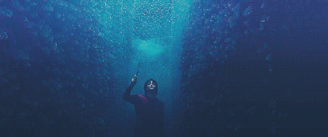
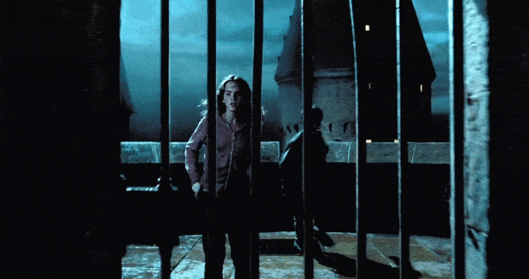
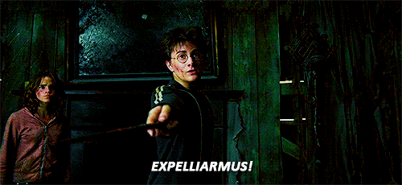
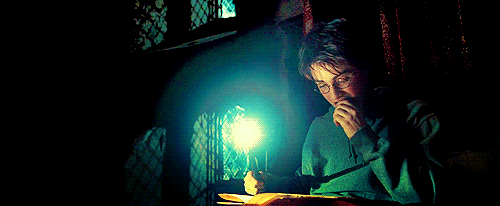
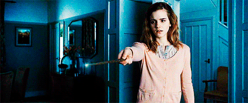
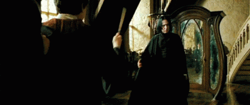
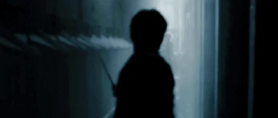
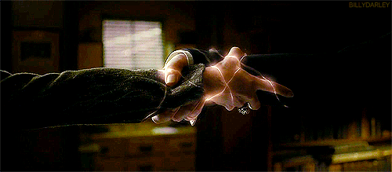

Harry Potter Spells

From the time J.K. Rowling
published her first book in the Harry Potter series—1998's Harry Potter and the Chamber of
secrets—she introduced fans to an expansive new Wizarding World that fans have been lost in ever
since.
Potterheads have an eight movie film franchise that never gets old, inspiring quotes from the
novels, an actual Universal theme park, and thousands of addictive fan fiction stories. And yet
another element to add to the dynamic magical universe is a literal language created by Rowling,
comprised of dozens of spells, charms, and hexes that Harry Potter wouldn't be complete without.
Muggles, witches, and wizards: Grab your wands, and enjoy!
-
A
- Aberto - Opens locked doors
- Accio - Summons objects
- Aguamenti - Summons water
- Alohomora - Unlocks objects
- Anapneo - Clears someone's airway
- Aparecium - Reveals secret, written messages
- Apparate - A non-verbal transportation spell that allows a witch or wizard to instantly travel on the spot and appear at another location (disapparate is the opposite)
- Ascendio - Propells someone into the air
- Avis - Conjures a small flock of birds
-
B
- Bat-Bogey Hex - Turns the target's boogers into bats 
- Bombarda - Creates an explosion
- Brackium Emendo - Heals broken bones
-
C
- Capacious Extremis - Known as the Extension Charm, it's a complicated spell that can greatly expand or extend the capacity of an object or space without affecting it externally
- Confundo - Known as the Confundus Charm, it causes confusion of the target
- Conjunctivitis Curse - Affects the eyes and sight of a target
- Crinus Muto - Changes hair color and style
-
D
- Diffindo - Used to precisely cut an object
- Disillusionment Charm - Causes the target to take on the appearance of its surroundings
- Disapparate - A non-verbal transportation spell that allows a witch or wizard to instantly travel on the spot and leave for another location (apparate is the opposite)
-
E
- Engorgio - Causes rapid growth in the targeted object
- Episkey - Heals minor injuries
- Expecto patronum - The Patronus Charm is a powerful projection of hope and happiness that drives away Dementors; a corpeal Patronus takes the the respective animal form of the caster, while a non-corpeal appears as a wisp of light; at 13, Harry Potter was the youngest known witch or wizard to prouduce a corpeal Patronus
- Erecto - Allows a witch or wizard to build a structure, like a tent
- Evanesco - Vanishes objects 
- Expelliarmus - Forces an opponent to drop whatever's in their possession
-
F
- Ferula - A healing charm that conjures wraps and bandages for wounds
- Fidelius Charm - A complex charm that conceals a secret into the soul of a chosen "Secret Keeper;" if a location is the subject of concealment, it becomes undetectable to others
- Fiendfyre Curse - Conjures destructive, enormous enchanted flames
- Finite Incantatem - A general counter-spell that's used to reverse or counter already cast charms
- Furnunculus Curse - A jinx that causes a breakout of boils or pimples
-
G
- Geminio - Duplicates objects
- Glisseo - Transforms a staircase into a slide
-
H
- Homenum Revelio - Reveals the presence of another person
- Homonculus Charm - Detects anyone's true identity and location on a piece of parchment; used to create the Marauder's Map
-
I
- Immobulus - Immobilises living targets
- Impedimenta - A temporary jinx that slows the
movement of the target
- Incarcerous - Conjures ropes
- Impervius - Makes an object waterproof
- Incendio - Conjures flames
-
J
- Langlock - Causes the target's tongue to stick to the roof of their mouth
- Legilimens - Invading or navigating another's mind
- Levicorpus - Levitates the target by their ankle
- Locomotor Mortis - The Leg-Locker curse bounds the target's legs 
- Lumos - Illuminates the caster's wand
-
M
- *Morsmordre - Conjures and projects Lord Voldemort's Dark Mark
- Mucus Ad Nauseam - Inflicts an extreme runny nose or cold
- Muffliato - Creates a buzzing sound in the target's ears to prevent eavesdropping
-
N
- Nox - Reverses the lumos charm, extinguishing a wand's light
-
O

- Obliviate - Erases the target's memory
- Obscuro - Conjures a blindfold
- Oculus Reparo - Repairs eyeglasses
- Oppugno - Directs an object or person to attack a victim
-
P
- Petrificus Totalus - Temporarily freezes or petrifies the body of the target
- Periculum - Conjures flares/red sparks
- Piertotum Locomotor - Incantation used to bring to life inanimate objects and artifacts
- Protean Charm - Links objects together for better communication
- Protego - Casts an invisible shield around the caster, protecting against spells and objects (except for The Killing Curse)
-
R
- Reducto - Reduces the target to pieces
- Reducio - Shrinks an enlarged object to its regular size
- Renneverate - Awakens or revives the target
- Reparifors - Heals magical ailments like poisoning or paralysis
- Reparo - Fixes broken objects
- Rictusempra - A charm that disarms an opponent by tickling them 
- Riddikulus - Used to defeat a Boggart, the charm allows the scary creature to assume a comedic form, disarming it
-
S
- Scourgify - Cleans objects 
- *Sectumsempra - Inflicts severe lacerations and haemorrhaging on the target
- Serpensortia - Conjures a live snake
- Silencio - Silences the target
- Sonorus - Amplifies the witch or wizard's voice
- Spongify - Softens the target
- Stupefy - The Stunning spell freezes objects and renders living targets unconscious
-
T
- Tarantallegra - Aimed at the legs, causes uncontrollable dancing movement
-
U

- Unbreakable Vow - A magically binding contract that results in the death of whoever breaks it
-
W
- Wingardium Leviosa - Causes an object to levitate; but remember what Hermione said: "It’s Wing-gar-dium Levi-o-sa, make the 'gar' nice and long.’"


- Aberto - Opens locked doors